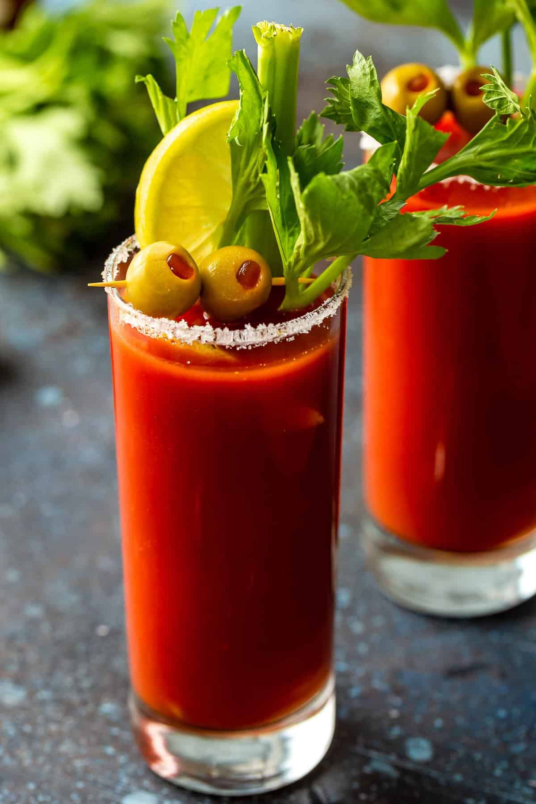

Classic Bloody Mary

Description:
A classic brunch cocktail, the Bloody Mary is traditionally made with vodka, tomato juice, Worcestershire sauce, black pepper, celery salt, Tabasco, and lemon juice. There are numerous renditions that use different types of alcohol. The best part about the Bloody Mary is its garnish — you can top this cocktail with almost anything, like bacon, pickles, and even cheeseburger sliders.
Ingredients:
- 1 teaspoon sea salt, or as needed
- ice cubes, as needed
- ¾ cup spicy tomato-vegetable juice cocktail (such as V8®)
- 1.5 fluid ounce jigger vodka
- 2 dashes Worcestershire sauce
- 1 dash hot pepper sauce (such as Tabasco®)
- salt and ground black pepper to taste
- 1 stalk celery
- 2 garlic-stuffed green olives, threaded onto a toothpick
Directions:
- Pour salt onto a small plate. Moisten the rim of a glass and press into the salt.
- Fill a cocktail shaker with ice cubes; add vegetable juice cocktail, vodka, Worcestershire sauce, hot pepper sauce, salt, and pepper. Cover and shake until the outside of shaker has frosted, about 20 seconds.
- Strain Bloody Mary into the prepared glass. Garnish with celery stalk and olives.